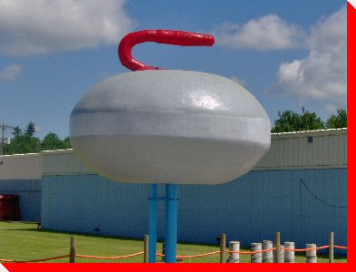

LARGE CANADIAN ROADSIDE ATTRACTIONS

World's Largest Curling Rock
Arborg, Manitoba
Tweet
Credit: Cindy Stansell of the
Town of Arborg
Return to Manitoba Page
Main
|
What's New
|
By Location
|
Alphabetical Listing
|
By Type
Wanted Photos List